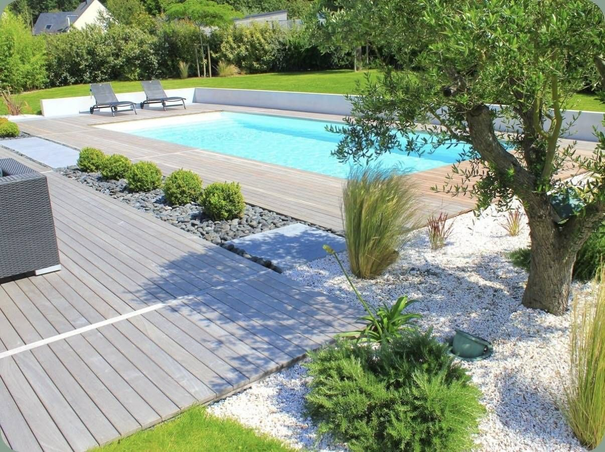
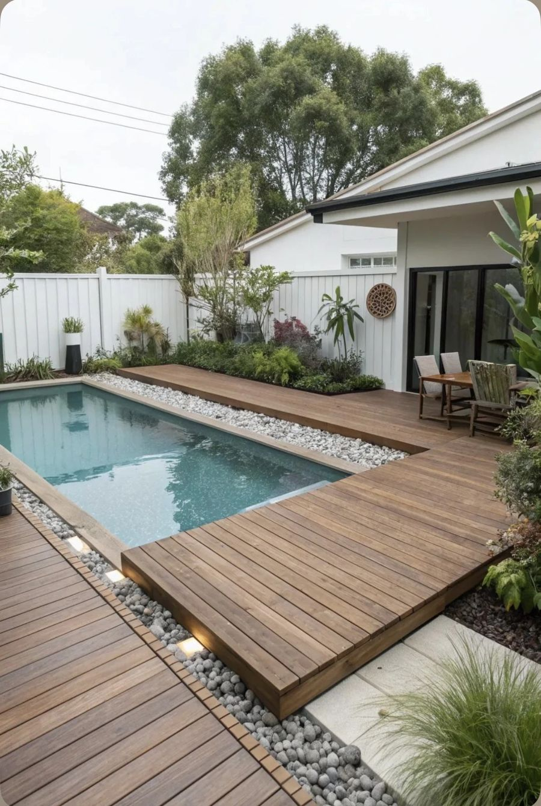
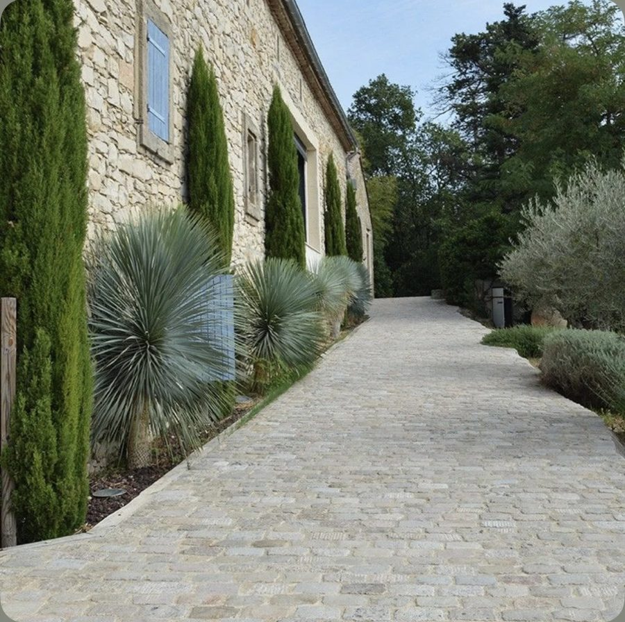
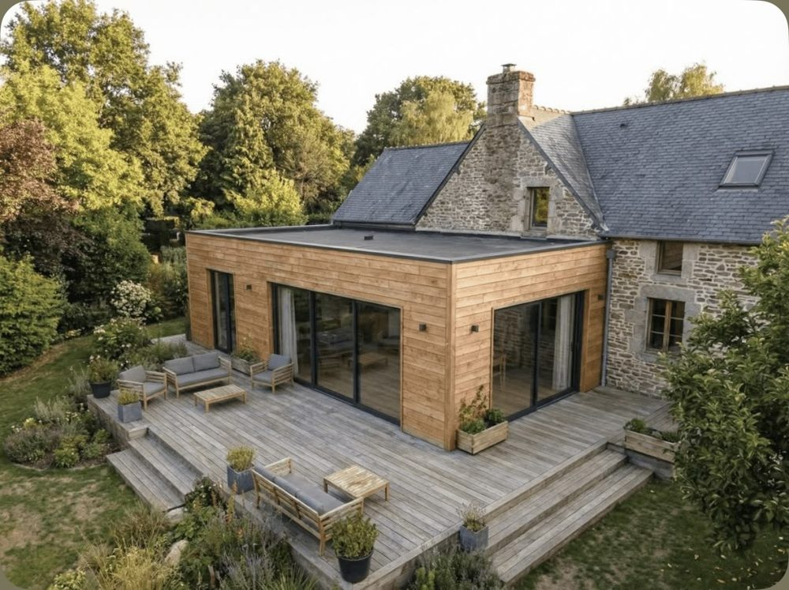

Terrassement de maison, garage ou extension
Plateforme prête à recevoir les fondations.
Demander un devis
Préparation de terrain, décaissement et nivellement, fouilles et fondations, assainissement individuel, terrassement de piscine : nous réalisons vos travaux de terrassement à Pornichet.
Pour une maison, un garage, une extension, une piscine ou une mise aux normes de l'assainissement, chez les particuliers, les professionnels et les collectivités.
Plateforme prête à recevoir les fondations.
Demander un devisFouilles, fondations et dalle béton à la suite du terrassement.
Demander un devisTerrasse, allée, abri de jardin, aménagement extérieur.
Demander un devisAssainissement individuel, en lien avec le SPANC.
Demander un devisCreusement du bassin, évacuation des terres, abords.
Demander un devisDémolition, enlèvement des gravats, remise en état.
Demander un devisGros œuvre, second œuvre et finitions avec un seul interlocuteur.
Demander un devisLes terrains proches de la plage sont sableux ; plus à l'intérieur, le sol est plus ferme.
Pornichet descend doucement vers la baie, avec une côte rocheuse du côté de Sainte-Marguerite et une longue plage de sable qui se prolonge vers La Baule. Sur les parcelles rocheuses, une piscine ou un sous-sol de garage peut demander l'usage d'un brise-roche, ce que nous évaluons à la visite. Ailleurs, nous terrassons des terrasses de plain-pied, des allées, des places de stationnement et les plateformes d'extension. Sur sol filtrant, les eaux de pluie s'infiltrent bien, mais les surfaces imperméables doivent garder une pente et un point d'infiltration sur la parcelle. Dans les rues résidentielles, nous anticipons le stationnement du camion et l'évacuation des terres pour gêner le moins possible le voisinage.
Pornichet est soumise à la loi Littoral et à son plan local d'urbanisme. En saison, l'accès et le stationnement près du front de mer sont plus difficiles : nous organisons les livraisons et l'évacuation des gravats en conséquence.
Pour comprendre les étapes, lisez notre guide décaissement de terrain.
Sur la côte, les sols sableux se terrassent facilement mais demandent un compactage soigné et des fondations bien dimensionnées. Dans les communes de la presqu'île, nous tenons compte des accès parfois étroits et de la saison touristique pour planifier l'intervention des engins.



« Un excellent conseil, des délais très courts respectés, pour une réalisation et une finition impeccables, avec une finition de chantier parfaite. »
« J'ai fait appel à cette entreprise de rénovation-construction pour effectuer un agrandissement, je recommande vivement. »
Témoignages publiés sur larenovationdevosreves.fr.
Oui. Pornichet est à environ 43 km de Sainte-Pazanne, où se trouve notre entreprise. Nous intervenons aussi dans les communes voisines, comme Saint-Nazaire, La Baule-Escoublac, Guérande, Trignac. La visite sur place et le devis sont gratuits.
Les terrains proches de la plage sont sableux ; plus à l'intérieur, le sol est plus ferme. Nous vérifions votre terrain lors de la visite avant de chiffrer.
Oui, c'est fréquent pour les résidences secondaires. Après la visite et la signature du devis, nous organisons l'accès au chantier avec vous et vous tenons informé de l'avancement.
Le prix dépend du volume de terre à déplacer, de la nature du sol, de la pente, de l'accès au terrain et de l'évacuation des terres. Nous nous déplaçons avant de chiffrer : le devis est gratuit, détaillé poste par poste, et sans engagement.
Décrivez votre terrain et votre projet en quelques lignes, nous vous rappelons pour convenir d'une visite sur place.